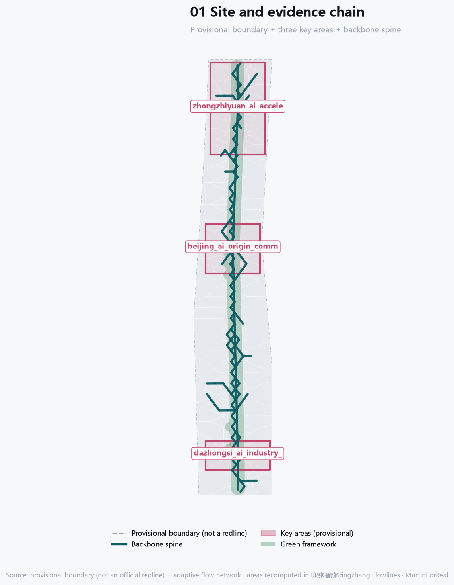
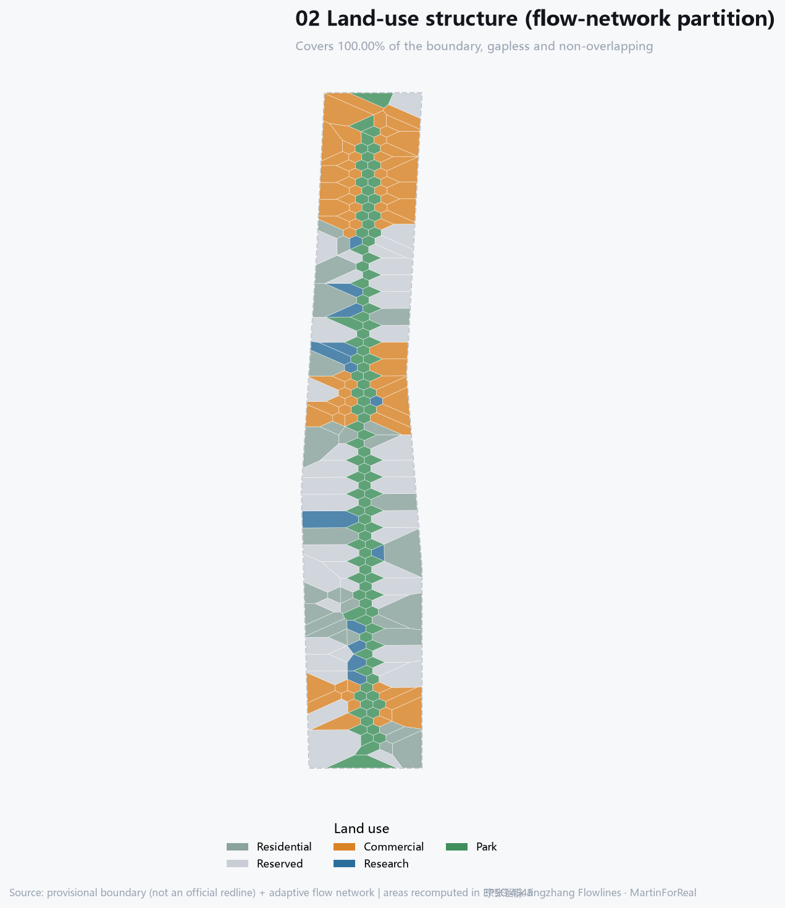
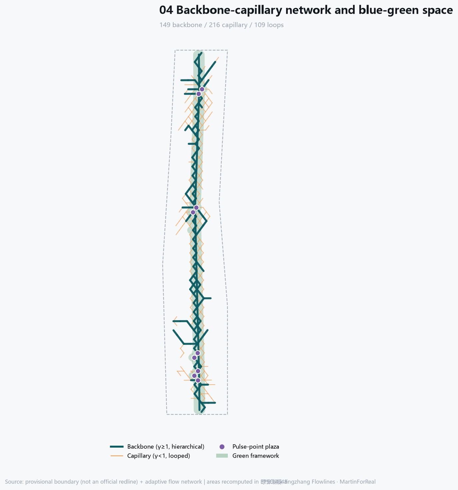
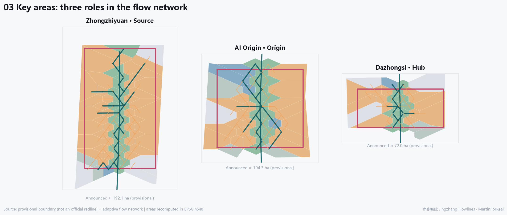

Overview map

Three-level scope
Coordinated research area ~43.6 km², overall design area ~11.4 km², key areas ~368.4 ha, converging level by level. Methodologically these are three resolutions: flow direction at the coordinated level, backbone phase at the overall level, capillary phase at the key-area level.
Key metrics
Benchmarking
| Network | Edges | Node cov. | FT | Failure | Recovery |
|---|---|---|---|---|---|
| MST | 664 | 1.000 | 0.533 | 0.119 | 0.156 |
| RNG | 1820 | 1.000 | 1.000 | 0.563 | 0.616 |
| GABRIEL | 1820 | 1.000 | 1.000 | 0.563 | 0.616 |
| DELAUNAY | 1949 | 1.000 | 1.000 | 0.643 | 0.613 |
| This design | 365 | 0.387 | 0.967 | 0.399 | 0.684 |
Land-use zoning

Mobility and slow traffic

Blue-green and public space
The green framework is the corridor park plus pulse-point parks, green ratio {(mv('green_ratio') or 0)*100:.2f}%; public-space nodes are derived from high-throughput network nodes and can be interrogated and recomputed.
Buildings
Building footprint {mv('building_footprint_area_sqm'):,.0f} m², a massing indication only; no floor-area ratio, height or parcel-level retain/renovate/demolish conclusion.
Key areas

AI scenarios
12 AI scenario cards, 3 industry test scenarios and 6 personas are in proposal.md. Every scenario is human-reviewable and abortable, performs no personal identification, requires no non-public data, and a test scenario is not approved operation.
Renewal projects
Phasing follows network formation: phase 1 completes the backbone and key-area pulse points, phase 2 densifies the capillary layer and stitches east-west, phase 3 keeps reserve capacity. Built edges carry a lower bound and are not freely pruned. Policy suggestions are conceptual only.
Task coverage
Coverage of announcement tasks 1.3/1.4/1.5 and agent.1-agent.6 is recorded in compliance_matrix.json; mandatory standards in standard_matrix.json; design-depth items in design_depth_matrix.json.
Self-check status
This package passes the four self-check gates: deterministic validation, spatial review, visual packaging and professional evidence. Results are written to self_check.json and metrics are recomputed from the submitted GeoJSON in EPSG:4548.
Sources
The primary basis is the prequalification announcement; the machine-readable basis is the registered material under brief/site-package/. External academic literature is method basis only (background_only), never site fact. Full list in sources.json.
Assumptions
Key assumptions: resistance weights are value judgements by the author, not measurements; load-fluctuation scenarios are synthetic; lattice resolution is 140 m; all spatial suggestions are conceptual. Full list in assumptions.json.
Generation method
Adaptive conductance dD/dt = |Q|^γ/(1+|Q|^γ) − D, with γ=1.35 for the backbone and γ=0.72 for the capillary phase; resistance weights fully disclosed, seed 20260518, fully reproducible.